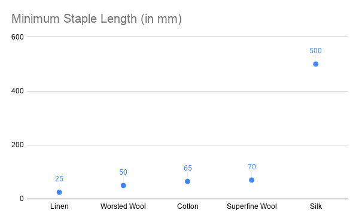
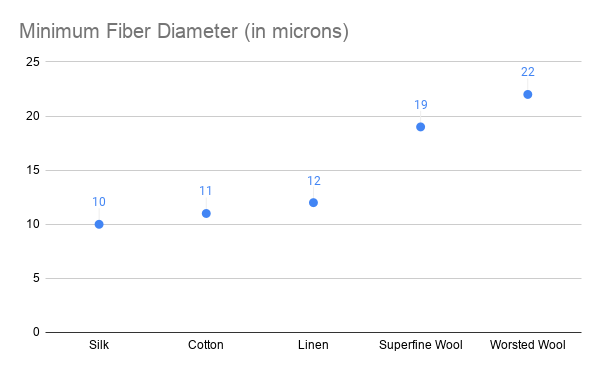
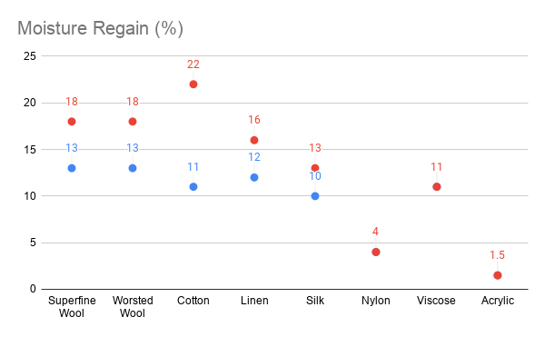
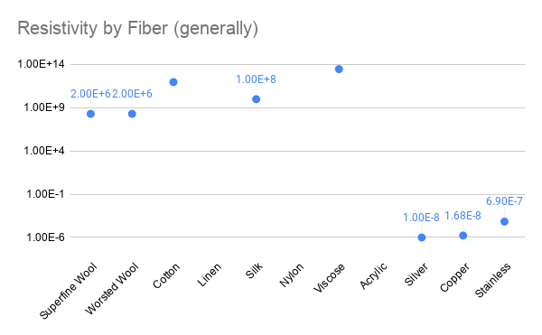

Comparing Materials #
In some projects, you may want to select fibers based on the properties you need and its useful to be able to look at them side by side and see which you might prefer. To help this, we have attempted to put information about each fiber in a common space. These, however, are incredibly general as some measurements (e.g. resistivity) will vary greatly on the specific preparation of the material for use in a textile.
If you would like to review all the data in one common location, you can visit this Google Spreadsheet we put together. Kobakant also has an amazing resource about the different constructions and comparisons for materials and yarns as well: https://www.kobakant.at/DIY/?p=8012
We have organized this information within fiber groups and across fiber groups where it makes sense. Because of the different sourcing traditions of textile fibers and things like conductive materials, it was not always possible to find information that was comparable across cases. The specific qualities I included are as follows:
General Measures #
Staple Length: #
for staple fibers, this describes the range of lengths available for each fiber. Measured in millimeters. Staple length is usually given in a range. In the chart below, we plotted the minimum possible staple length - showing linen to be the shortest and silk, by far, to be the longest. Longer staple length fibers require less individual fibers in spinning (allowing them to be finer). This measure is somewhat irrelevant for synthetic fibers, which are extruded and cut into any length.

Fiber Diameter: #
For staple fibers, this describes the range of widths for each fiber type and its measured in microns. The chart below shows the minimum diameter possible for each fiber, with silk being the finest and worsted wool being the most coarse. The finer the fiber, the lighter and finer the yarn. This number is somewhat irrelevant for filaments, which can be extruded at different diameters depending on the equipment used.

Moisture Regain #
Moisture regain is a measure of how much moisture the fiber can absorb and still feel dry to the touch.The chart below shows both the low and high range of moisture regain measured across natural and synthetic fibers. The chart below shows that natural fibers have better regain than synthetics do not. I was not able to find this information for metals more generally.

Crimp #
The level of crimp in staple fibers imbues them with the ability to be spun easily and hold air. To indicate if the fiber is crimped or not, we simply indicate yes or no. Wool is naturally crimped and some synthetics are given a crimp to aid in different textures. For metallics, it was harder to find out but in working with stainless I find the texture (of stainless fibers) to be very “grabby” or barbed, which indicates to me that it might bend and hold a kind of crimped structure.
| Superfine Wool | Worsted Wool | Cotton | Linen | Silk | Nylon | Rayon (Viscose) | Acrylic | Silver | Copper | Stainless | |
|---|---|---|---|---|---|---|---|---|---|---|---|
| Crimp: | Yes | Yes | No | No | No | can be added | can be added | can be added | no? | no? | yes? |
Electrical Measures #
Resistivity #
Is the inverse of conductivity and expresses how resistive a material is (generally). The specific resistance of your material will always depend on its preparation (e.g. width, length, temperature, humidity, etc. so these are only to be considered in comparison to each-other. The chart below shows resistivity across all materials in our collection. The log scale on the y-axis should be noted and was used to keep very large values on the same graph. Metallic materials has much more consistent measures of resistivity where natural fibers like cotton and linen did not (or I made up a number based on information that it was ‘more’ or ’less" resistive than another). Because natural fibers absorb water and hold more air in their structures, they have exhibit dramatic changes in resistivity.
| Superfine Wool | Worsted Wool | Cotton | Linen | Silk | Nylon | Rayon (Viscose) | Acrylic | Silver | Copper | Stainless | |
|---|---|---|---|---|---|---|---|---|---|---|---|
| Resistivity | (2.0 ± 0.1)x10^6 | (2.0 ± 0.1)x10^6 | 9.53×10^9 | said to be higher than cotton and wool | insulator when dry | 3.6*10^11 | 1.59x10^-8 | 1.68×10^−8 | 6.9×^10−7 |

Anti-Static #
Static refers to the ability for the material to build up a charge and seem to correlate to how thermally conductive the material is. Wool is said to be naturally anti-static where silk can build up a charge. This depends on the chemical makeup as well as the moisture holding ability of each fiber. Metals are anti-static in that they are highly conductive, moving charges readily through their structure instead of allowing electrons to collect on the surface. Static also causes clothing to “cling.”
| Superfine Wool | Worsted Wool | Cotton | Linen | Silk | Nylon | Rayon (Viscose) | Acrylic | Silver | Copper | Stainless | |
|---|---|---|---|---|---|---|---|---|---|---|---|
| Anti-Static | Yes | Yes | ? | ? | Poor in Dry Conditions, Good in Wet | unsure | unsure | Good | Good | Good | Good |
#
Thermal Conductivity #
Thermal conductivity describes how easily heat moves through the material. Wool has low thermal conductivity because it can hold heat within its structure (radiating warmth in cold weather or keeping you cool in hot weather). A material with low thermal conductivity will feel warm to the touch (like wool). A material with high conductivity will keep you cool and may feel cool to the touch (like linen).
| Superfine Wool | Worsted Wool | Cotton | Linen | Silk | Nylon | Rayon (Viscose) | Acrylic | Silver | Copper | |
|---|---|---|---|---|---|---|---|---|---|---|
| Thermal Conductivity | Poor - 0.04 (W/m K) | Poor - 0.04 (W/m K) | Good | Higest (heat resistant - feels cool to touch, does not melt) | Poor | OK | 406 (W/m K) | 385 (W/m K) |
Other Measures #
Fire Resistance #
This describes how resistant the material is to fire, or the temperature at which it burns. Some materials (e.g. synthetics) never burn, but melt. Wool has fire resistant properties where linen will burn like a match.
UV Resistance #
I see this describing two qualities in my search: how much UV degrades the structure (e.g. sun exposure will break down silk), and how much UV is able to penetrate the fiber. It was difficult to disentangle the measures so they are likely to be compounded below.
Anti-Microbial #
This describes how readily microbes can grow within the fiber. Not available for all materials and we included below as either “good” or “poor.” Of metallic fibers, Silver is often said to be anti-microbial (and anti-odor) but its unclear if this is also true for copper and stainless.
Moisture Wicking #
This is the ability for a fiber to move moisture into its structure and to dry quickly. Wool and synthetics can be moisture wicking and cotton is not.
Moisture Absorbant #
This refers to how much moisture the fiber can absorb. Its mostly related to weight and how much weight in water the material can take on. A fiber can be both wicking and absorbing but the two entities are not distinctly related.
Dry Strength & Wet Strength #
Some fibers perform differently wet than dry. For instance, wool if very strong when dry and very weak when wet (hence no machine washing). Cotton, on the other hand, is stronger when its wet than dry. We include these as general measures and they most closely correspond to machine-washability.
| Superfine Wool | Worsted Wool | Cotton | Linen | Silk | Nylon | Rayon (Viscose) | Acrylic | Silver | Copper | Stainless | |
|---|---|---|---|---|---|---|---|---|---|---|---|
| Fire Resistance | Good | Good | Very Poor | OK (but melts) | Poor, Burns | ||||||
| UV Resistance | Good | Good | Poor | Poor | UV Weakens Fibers | Great | |||||
| Anti-Microbial | Good | Good | Poor | Good | ? | ||||||
| Moisture Wicking | Good | Good | Poor | Good | Good | ||||||
| Moisture Absorbant | Good | Good | Good | Poor | |||||||
| Dry Strength | Good | Good | Good | Great | Good | Great | Poor | ||||
| Wet Strength | Poor | Poor | Better | Better | Great | Poor |
Sustainability Measures #
There were so many measures we could have included here but we found it difficult to find comparative information across the ones we included. Other factors that affect sustainability are the region of growth, the need for pesticides, the water use for growing, as well as the water and chemical use often used to process the fibers into a usable form. Another factor are the sourcing of the materials. For instance, bamboo from “managed forests” can be seen as more sustainable than bamboo that is harvested (and not replanted). In the chart, we include general measures about renewability and biodegradability (and all measures assume the material is undyed, untreated with coating or chemical treatments). The general trend shows that natural fibers are renewable and biodegradable in shorter spans than synthetic materials. However all these features depend on the particular environmental factors affecting the biodegrading. My my personal opinion, I tend to hold wools and linens in my mind as more sustainable due to their availability and yield. For linen especially, the low water use is a bonus.
| Superfine Wool | Worsted Wool | Cotton | Linen | Silk | Nylon | Rayon (Viscose) | Acrylic | Silver | Copper | Stainless | |
|---|---|---|---|---|---|---|---|---|---|---|---|
| Renewable Resource | Yes | Yes | Yes | Yes | Yes | No | ? | No | No | No | No |
| Biodegrades | 100%, 3-4 months | 100%, 3-4 months | 100% 1week - 1 year | 100%, 2 weeks | Ok, 4 years | Poor | ? | ? | ? | ? | ? |